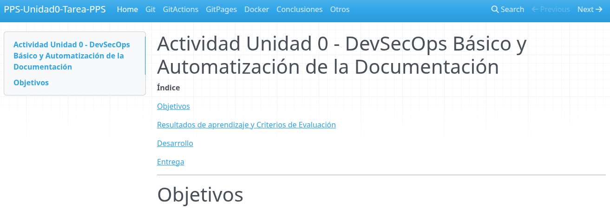

Tarea Unidad 0 - RA5.
Índice
Objetivos
Esta actividad tiene como objetivo poner en práctica los contenidos tratados en esta unidad:
- Lenguaje de marcas MarkDown.
- Sistemas de control de versiones: Git.
- Creación y administración de contenedores: Docker.
- Ciclos de desarrollo software seguros: SecDevOps.
- Documentación.
Resultados de aprendizaje y Criterios de Evaluación
Esta actividad se relaciona con el resultado de aprendizaje y criterios de evaluación RA 5 a, b, c y g.
Desarrollo
Nota importante Documenta explicando claramente los procesos realizados, incluyendo fragmentos de código con los comandos utilizados y/o adjuntado las capturas de pantallas necesarias que demuestren que has realizado las operaciones, así como el resultado de los productos.
Las capturas de pantalla serán a pantalla completa y deberá visualizarse tu nombre en el terminal o bien la imagen de tu usuario en la plataforma.
Deberás de añadir como colaborador en tu repositorio de GitHub al profesor: PPSvjp Settings > Collaborators.
1. Creación del repositorio
Deberas crear un repositorio en GitHub.com con nombre PPS-Unidad0-Tarea-Tu_nombre.
Deberás documentar las diferentes fases o partes de la tarea en MarkDown en diferentes archivos.
La base del repositorio es la misma que hemos utilizado en Actividad-DevSecOps.
Una aproximación de la estructura del repositorio sería el siguiente (puedes hacer los modificaciones que creas convenientes):
PPS-Unidad0-Tarea-Tu_nombre/
├── calculator/
│ ├── __init__.py
│ └── gui.py
├── docs/
│ └── index.md
│ └── git.md
│ └── gitActions.md
│ └── gitPages.md
│ └── docker.md
│ └── conclusiones.md
├── mkdocs.yml
├── requirements.txt
└── .github/
└── workflows/
└── CreacionDocumentacion.yml
- En
index.mdse encontrará un apartado introductorio relativo con la tarea y un índice con los enlaces al resto de documentos. - En
git.mdse encontrará la documentación del proceso de las operaciones realizadas para la creación del repositorio. - En
gitActions.mdse encontrará la documentación del proceso de las operaciones de creación y comprobación del WorkFlow para la creación de la estructura de archivos necesarios para crear una web estática conMkDocs. - En
docker.mdse encontrará la documentación del proceso de las operaciones de creación y puesta en marcha del servicioNGinxdonde se mostrará la documentación de la actividad. - En
conclusiones.mdel apartado de tus conclusiones.
2. Creación de WorkFlow de GitHub Actions
Crea un WorkFlow para que se genere la documentación cada vez que hacemos un push en el repositorio.
Recuerda que tendrás que modificar el fichero de configuración de
mkdocspara que aparezcan las diferentes secciones que hemos visto antes. Además recuerda cambiar la secciónsite_namedel archivo.
3. Vinculación con GitHub Pages
Configura el repositorio para habilitar GitHub Pages y que nos muestre la documentación de la tarea.
Debería tener una apariencia tal que así:

Recuerda que en la entrega tendrás que entregar también la dirección de la página del repositorio en
github.io.
4. Creación de un contenedor de servicios NGINX con Docker.
La idea de esta sección es levantar un contenedor NGINX para publicar la documentación de la tarea. La pregunta es: ¿Parece absurdo crear un servicio para publicar documentación cuando ya está pública en github.io. La respuesta es: es absurdo, pero es la forma de evaluar la adquisición de los conocimientos en Docker por lo tanto:
¡¡¡¡ESTO PUEDE SERTE ÚTIL!!!! Recuerda que la documentación generada por mkdocs, se guarda en una rama con nombre
gh-pages.Podemos esperar entonces que si estamos en ese repositorio y nos cambiamos a esa rama
git checkout gh-pagesnos encontremos en nuestro directorio de trabajo toda la estructura y archivos que contiene nuestra página web estática.Por otra parte ya sabemos que para persistir información en Docker, podemos añadir volúmenes
bind mounta nuestras máquinas, por lo que podemos hacer que el contenido de nuestro repositorio se monte en el contenedor deNGINXpara mostrar la información de nuestra actividad.
Por lo tanto, crea un contenedor de servicios NGINX mediante alguna de las siguientes formas (sólo una):
- Contenedor Docker.
- Creación de imagen con dockerfile.
-
Docker-compose Características de la máquina:
-
Nombre del contenedor: PPSUnidad0-Tarea_Tu_nombre
- Puerto redirigido al puerto 8085 de nuestra máquina anfitriona.
Bind-Mountde la carpeta de nuestro repositorio
Explica brevemente el proceso de creación del centenedor y no te olvides de adjuntar capturas de pantalla de:
- Creación de la máquina.
- Visualización de la página web en el puerto 8085.
- Captura de pantalla o archivo con toda la información sobre el contenedor (
docker inspect.)
Entrega
Indicaciones de entrega
Una vez realizada la tarea, el envío se realizará a través de la plataforma. Deberás de entregar al menos:
- El repositorio que has creado, comprimido en un archivo.
- El enlace a la página de
github.iodonde está publicado la documentación de esta actividad. - Revisa que has añadido como colaborador en tu repositorio de GitHub al profesor:
PPSvjpSettings > Collaborators.
El archivo comprimido se nombrará siguiendo las siguientes pautas:
PPS-Unidad0-Tarea-Apellido1_Apellido2_Nombre
Asegúrate que el nombre no contenga la letra ñ, tildes ni caracteres especiales extraños. Así por ejemplo la alumna Begoña Sánchez Mañas para la primera unidad del MP de PPS, debería nombrar esta tarea como...
PPS-Unidad0-Tarea-sanchez_manas_begona
Calificación de la tarea
La puntuación de los apartados es la siguiente:
Si no se adjunta el repositorio comprimido, no se indica la dirección del enlace a la documentación en GitHub.io o no se añade como colaborador en el repositorio al profesor, la tarea será calificada como 0
NOTA IMPORTANTE
Aquellos apartados/subapartados en los que las capturas de pantalla no sean claras o no tengan como fondo de pantalla la plataforma con tu usuario mostrando claramente la foto de tu perfil, no serán corregidos.
En el resto de los casos, la puntuación de los apartados es la siguiente:
- Apartado 1. Creación del repositorio (hasta 1,5 puntos).
- Apartado 2. Creación de WorkFlow de
GitHub Actions(hasta 1,5 puntos). - Apartado 3. Vinculación con GitHub Pages (hasta 1,5 puntos).
- Apartado 4. Creación de un contenedor de servicios
NGINXcon Docker(hasta 1,5 puntos). - Apartado 5. Documentación: presentación, extensión, exactitud, riqueza en síntaxis de MarkDown, etc. (hasta 4 puntos).